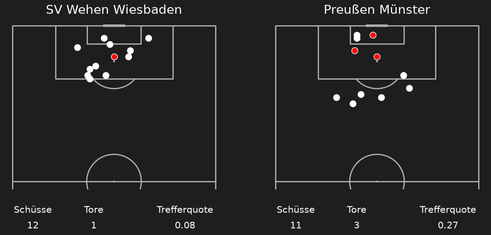
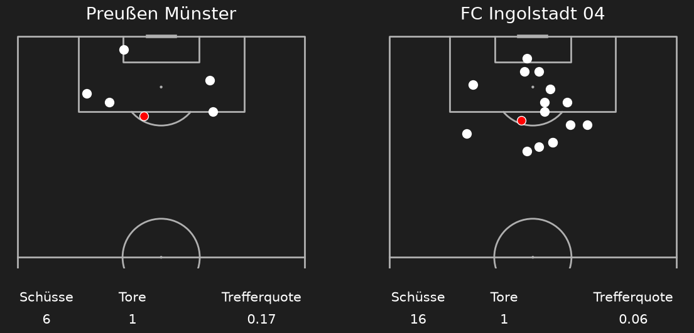
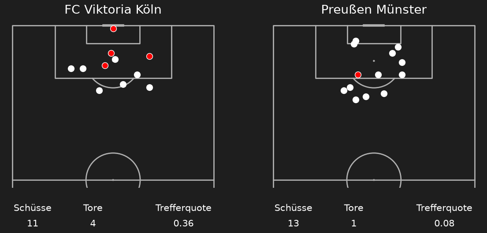
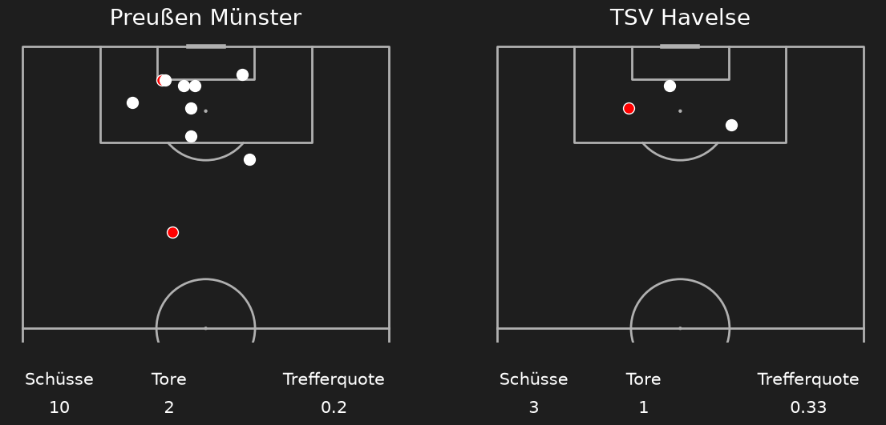
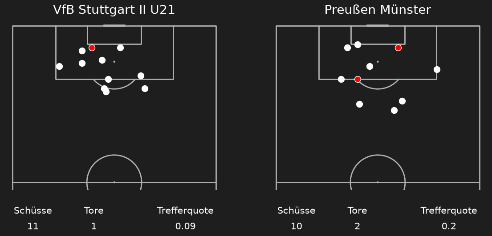
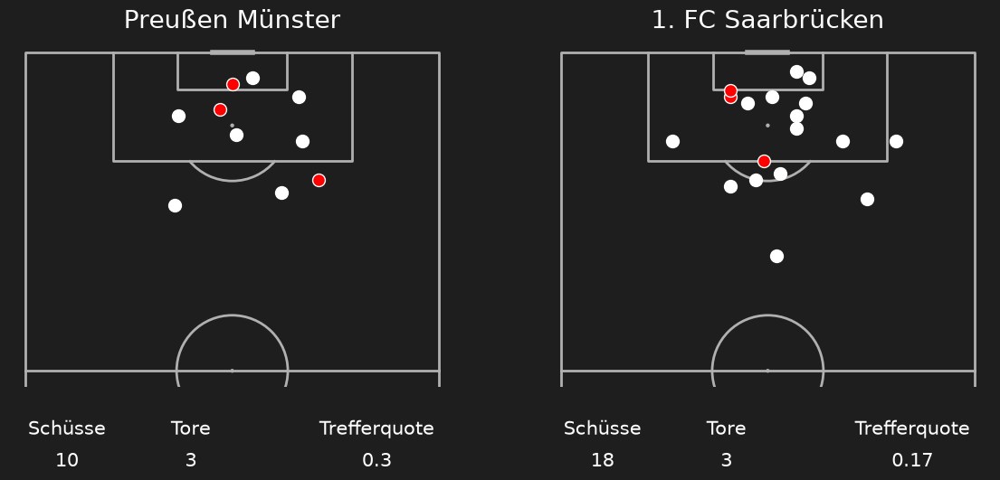
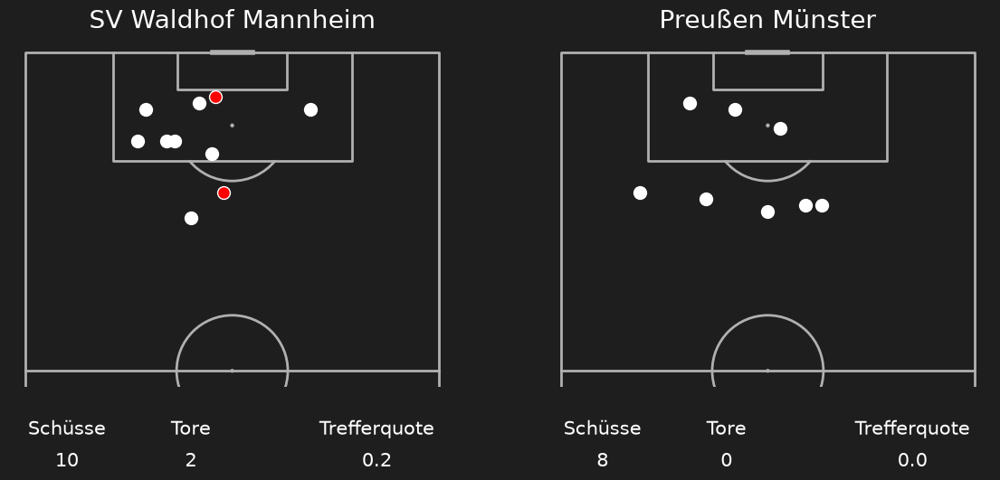
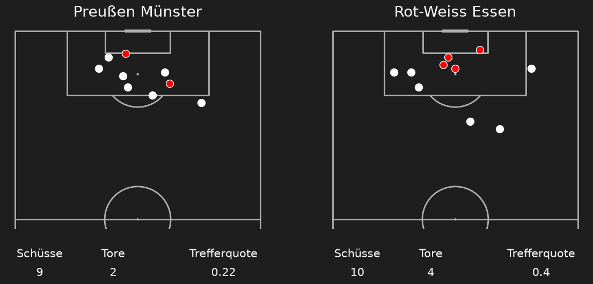
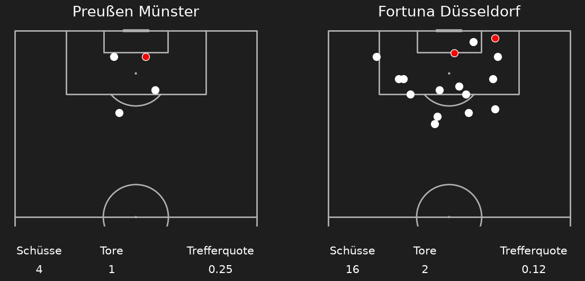
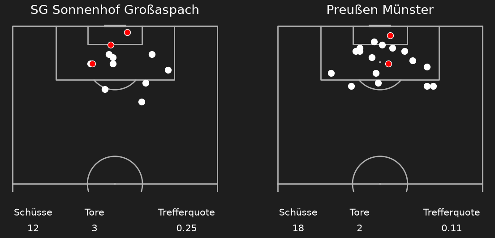

Shotmaps Preußen Münster Saison 26/27
Runde 1 SV Wehen Wiesbaden (1) - (3) Preußen Münster

Runde 2 Preußen Münster (1) - (1) FC Ingolstadt 04

Runde 3 FC Viktoria Köln (4) - (1) Preußen Münster

Runde 4 Preußen Münster (2) - (1) TSV Havelse

Runde 5 VfB Stuttgart II U21 (1) - (2) Preußen Münster

Runde 6 Preußen Münster (3) - (3) 1 FC Saarbrücken

Runde 7 SV Waldhof Mannheim (2) - (0) Preußen Münster

Runde 8 Preußen Münster (3) - (3) Rot-Weiss Essen

Runde 9 Preußen Münster (1) - (2) Fortuna Düsseldorf

Runde 10 SG Sonnenhof Großaspach (3) - (2) Preußen Münster
